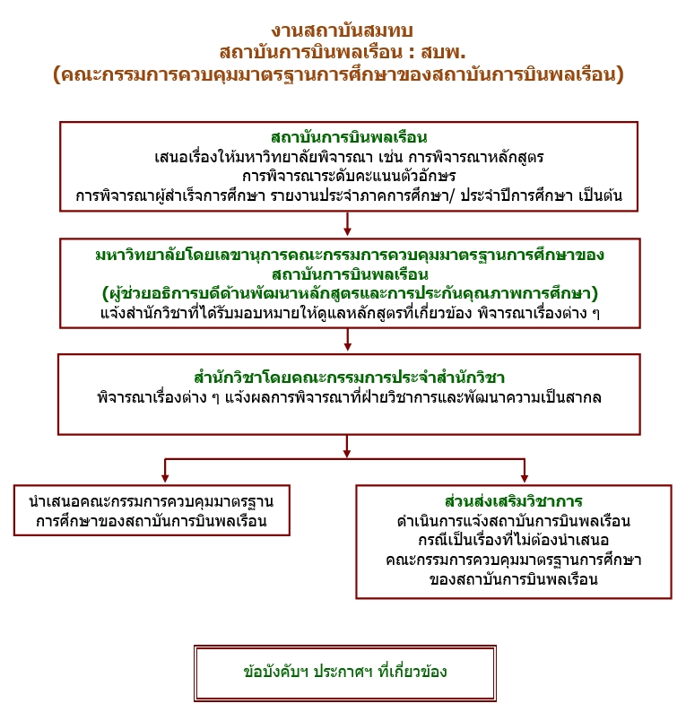

งานสนับสนุนวิชาการ
งานสนับสนุนวิชาการ
หน้าแรก
เกี่ยวกับเรา
งานและหน้าที่
บุคลากร
คณาจารย์
ผู้เชี่ยวชาญเฉพาะ/คณาจารย์บัณฑิต
การเสนอผลงานต่างประเทศ
ระดับปริญญาตรี
คู่มือการศึกษา
รางวัลเรียนเป็นที่หนึ่งของหลักสูตร
ระดับบัณฑิตศึกษา
ค่าธรรมเนียมผลิตดุษฎีบัณฑิต
รูปแบบวิทยานิพนธ์
รายละเอียดเกี่ยวกับหลักสูตร
การศึกษาดูงานนอกสถานที่
สถานบันสมทบ : สบพ
คำสั่งแต่งตั้งคณาจารย์ อาจารย์พิเศษ
กลับสู่หน้าหลัก
ขั้นตอนการดำเนินงานสถาบันสมทบ : สถาบันการบินพลเรือน
